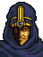

Narration
アウグストの進言をいれて
公路の南側をまわりこむリーフたち
しかし、この経路をつかって
レンスターにたどり着くためには
『迷いの森』と呼ばれるメルフィーユの
森林地帯をこえる必要があった
そこが、なぜ『迷いの森』と呼ばれるのか
そこを、なぜ人々がさけようとするのか
リーフたちは身をもって知ることになる
Opening 1

この森はメルフィーユの大森林
通称『迷いの森』です

迷いの森・・・
それで、どう行けばいいんだ？
森の北東へ抜けることができれば
レンスター城は目の前です
ただし、脱落者を出さぬよう
私たちは
最後に行く方がよろしいでしょう
わかった
皆にも注意をおこたらぬように
言ってくれ
では、出発だ！
Opening 2

ラインコック様
どうかなされましたか？

くっくっくっ・・・この玉を見てみよ
エモノがまよいこみおったわ
軍隊・・・ですな・・・
さては、アルスターのコノモール伯爵が
ミランダ姫を取り戻しに・・・
いや、ヤツはそれほどバカではあるまい
多分、レンスターの生き残りどもだろう
城を奪回するつもりなのではないか？
守りの固い西正面をさけて
この森を選んだというわけですか
おろかな・・・
われらにとっては
よいヒマつぶしができたというわけだ
まあ、手のあいてるものだけでよい
配置につかせろ
はっ
司祭はどうなされますか？
フッ、わしか・・・
わしはこれを試してみる
ほう、それはバサークの杖・・・
たしかに、おもしろそうでございますな
ふっふっふっ・・・

なんだかたのしそうね
ラインコック
サラ様！？・・・
こんなところに
おいでになられてはいけません
お部屋にお戻りください
だってたいくつなんだもの
おじいさまは？・・・
マンフロイ大司教は
ユリウス殿下とともに
コノートにいらっしゃいます
もう間もなくお戻りとは思いますが・・・
こんなことなら
ついてくるんじゃなかった
あーあ、たいくつ・・・
Enemy turn 2
え？・・・
だれ、だれなの・・・
サラ様？
どうかされましたか？
ううん・・・なんでもないわ
ねぇ、ラインコック
ちょっと散歩してきてもいい？
そ、それは困ります
どうかサラ様
おとなしくしていてください
Talk: Salem → Sara (only while she is an enemy)

サラ様！？
あなたが
どうしてこんなところに？
だれなの？
あなたなんて知らないわ
はい・・・
私はかつてロプトの神官でしたが
大司教の孫娘であるサラ様が
ご存知ないのはとうぜんです
ふーん・・・そうなの・・・
でも、あなたに用はないわ
あたしは声の主をさがしているの
声の主？・・・
とてもきれいな声・・・
あたしを呼んでるの
たすけてほしいって・・・
・・・そうか・・・
マンフロイ大司教の孫である
サラ様ならキアの杖を使える・・・
そういうことか・・・
ふーん・・・
じゃあね、セイラム・・・
Talk: Leif → Sara
え？
こんな森に女の子が？・・・
・・・・・・
きみはだれ？
一人なのか？・・
ふーん・・・
あなたなの・・・
えっ？
なんのことだ？
ふふっ・・・
やっぱりそうだわ
いいよ、あたしが助けてあげる
困ったな・・・
今はアウグストもドリアスもいないし
どうしたらいんだろう・・・
あたしはサラっていうの
あなたのことはなんでも知ってるわ
名前はリーフ
レンスターの王子でしょ
それで、父親はキュアンっていうのね
母親はエスリンっていう
可愛いひとだったけど
しんじゃったのよね
！・・・・
そんなに
恐い顔をしなくてもいいでしょ
あたしだって
パパもママもしんじゃったわ
ママはあたしが小さいときにね
パパは・・・ママを愛したことが
おじいさまの怒りにふれて
殺されたんだって
あたしが生まれる前の話よ
・・・・・・・
あたしを呼んでいたのはあなたなのよ
だから、助けてあげようと思ったのに・・・
じゃまにするのならもういいわ！
まってくれ！
よくわからないけど
とても大事なことのような気がするんだ
もっときみのことが知りたい
一緒に来てくれるか？
うん、いいよ
だって
あたし、あなたの声が好きだもの
ありがとう・・・
サラ・・・
Talk: Homer → Shannam

よお、シャナム、久しぶりだな

ぎくっ・・・
今度はロプトの手先ってわけか
お前もみさかいのないヤツだぜ
い、いや・・・
好きでやってるわけじゃないんだ・・・
金がなくなっちまって、しかたなく・・・
まあ、いいさ、好きにしな
俺には関係ないことだ
まっ、待ってくれよ
俺をこんなところに
一人おいてゆくつもりか
助けてくれよ、友達だろ？
だから好きにしなって
ついてきたきゃそれでもいいさ
うむっ・・・
かたじけない・・・礼を言うぞ
ぜんぜんにてねえ・・・
Monastery
ここはロプト教団の僧院ですな
神官どもはみな逃げたようですが・・・

王子！
僧院内に捕えられていたものがいました
王子にお会いしたいといってますが・・・
会おう
連れてきてくれ

リーフ王子・・・お久しぶりです・・・
きみは？
『きみは？』・・・ですって・・・？
忘れてしまわれたのですか！
アルスターのミランダです！！
ミランダ姫？ アルスターの王女の？
まさか・・・なぜここに・・・
お分かりになりませんでしたか？
そうでしょうね
こんなに落ちぶれた情けない姿ですもの
でも、それもこれも
王子、すべてはあなたのせいです！
ぼくの？ なぜ？
すべては
あなたたちがレンスターから
落ちてきたことからはじまったのです
お父様は戦いを好まない優しい方でした
帝国とも何ら争う理由はなかったのです
なのに・・・なのに・・・
あなたたちをかくまったばかりに
帝国にうらまれ
その介入を招いてしまったのです！
お父様は、私を人質に差し出し
国王としての権限を奪われ
失意のうちにこの世を去られた・・・
王子、おうらみします！
あなたさえ
あなたさえアルスターに来なければ
こんなことには・・・
・・・・・・
・・・ミランダ姫
それはちがうのではありませんか？
帝国は
もとよりアルスターを奪うつもりでおり
王子のことは口実でしかありません
こう申しては失礼ですが
姫のお父上はあまりにも気弱すぎた
勇猛なる騎士団を持っていながら
トラキアの侵攻には
一人日和見を決めこみ
同盟国であるレンスターの危機にも
兵を動かそうとしなかった
その結果がこれです
国が滅びたのは国王ご自身の責任です！
王子をうらむのは
筋ちがいではありませんか！
よせ、ドリアス！
今、そんな話をして何になる！
はっ・・・
確かに言いすぎました・・・
申し訳ありません
ミランダ姫
すまない・・・許してほしい・・・
でも、まさか
こんなところに
閉じこめられていたなんて・・・
ずいぶんつらかっただろう
もっとはやく助けに来るべきだった
・・・去年まではアルスターにいました
見はられていましたけど
コノモール伯爵がいてくれたから
そんなに不自由はしませんでした
でも、ターラやレンスターで反乱がおきて
アルスターでも
一部の者たちが反乱をくわだてて
帝国は不安に思ったのでしょう
私をこの僧院に移したのです
そうだったのか・・・
リーフ王子
先ほどのお言葉にいつわりがないのなら
私に力をかしてください！
私は、アルスターを取り戻したい・・・
お父様のうらみを晴らしたいのです
お願いします！
After Leif escapes
なんとか抜けることができましたな
それにしても
このようなところに
ロプトの僧院があるとは
このアウグストの
不覚にございました・・・
いや、気にすることはない
あなたとて神ではないのだから
だが確かにここは迷いの森だな
よく抜けることができたものだ
House
.png)
なんだおまえさんら、迷い人か？
えっ、ちがう？
わざわざここを選んできた？
・・・でも、おまえさんら
どうみてもこの森については
しろうとって面じゃねえか
よし、一ついいことを教えてやろう
この森はあちこちに
ひみつのしかけがしてあるんだ
それがおまえさんたちにとって
いいことなのか悪いことなのか
それはオレにはわかんねえけどな
Reincock: battle quote
ロプトの地に
足をふみいれるとは・・・
おろかな・・・
Reincock: defeat quote
・・・神よ・・・
お助けを・・・グワッ
Reincock: release quote
言うべきことは何もない・・・
Shannam: battle quote
ちょ
ちょっと待ってくれ
話を・・・
Shannam: defeat quote
そ
そんなばかな・・・
Shannam: release quote
とりあえず礼はいっておく
フッ・・・
Sara: battle quote
・・・あたしのこと
・・・きらいなの？
Sara: defeat quote
・・・さみしい・・・
Sara: release quote
・・・つまんない・・・